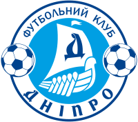
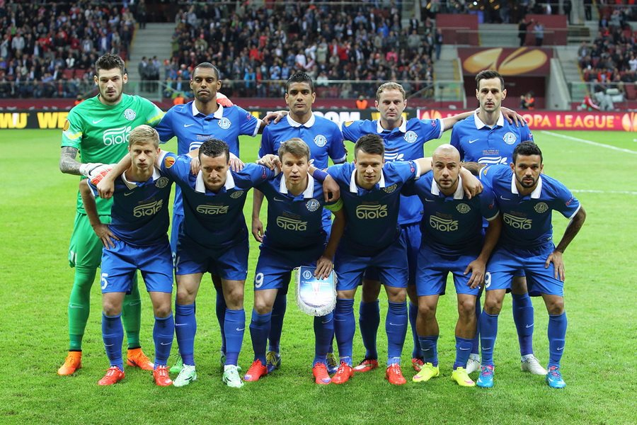

Дніпро (футбольний клуб, Дніпро)
Історія
«Дніпро́» — колишній український футбольний клуб з міста Дніпро. Заснований у 1918 році, припинив існування у 2019 році. За часів СРСР дніпряни двічі ставали чемпіонами СРСР (1983, 1988), вигравали Кубок СРСР (1989), Суперкубок СРСР (1989) і двічі — Кубок Федерації футболу СРСР (1986, 1989). За часів незалежної України клуб двічі ставав срібним призером чемпіонату України (1992/93, 2013/14) і тричі був фіналістом Кубка України (1994/95, 1996/97, 2003/04). На міжнародній арені команда стала фіналістом Ліги Європи (2015).
-
Радянська доба
-
1918—1946
Команда заснована в 1918 році і називалася «БРІТ» (Брянський робітничий індустріальний технікум). Технікум перебував у відомстві Брянського заводу (нині — ВАТ «Дніпропетровський металургійний завод імені Петровського»). Команда брала участь у першості Катеринослава (нині — Дніпро). Пізніше, коли почалася громадянська війна, команда припинила своє існування, але в 1923 році відродилася при фабрично-заводському училищі а незабаром повністю перейшла під опіку заводу.
У 1925 році команда представляла Дніпропетровський металургійний завод імені Г. І. Петровського і називалася «Петровець». У той час команда виступала в першостях міста, які проводилися 2 рази на рік (навесні та восени). Перший успіх «Петровець» святкував в 1927 році, коли став переможцем весняної першості. Але наступного року у команди був провальний сезон і вона довго не демонструвала жодних успіхів.
У 1936 році «Петровець» отримав нову назву — «Сталь». З цього року в чемпіонатах СРСР та розіграшах Кубка країни стали брати участь не збірні команди міст, республік, а колективи спортивних товариств. У 1-му чемпіонаті СРСР, який відбувся навесні 1936 року, взяли участь колективи лише трьох найбільших міст країни — Москви, Ленінграда і Києва. Місту Дніпропетровську (нині Дніпру) надали лише два місця: дніпропетровське «Динамо» стало єдиним українським представником у групі «Б», а в групі «Г» взяла участь «Сталь».
-
1948—1956
У наступному році команда виступала краще, чому сприяло об'єднання з дніпропетровською командою «Динамо». «Сталь» посіла 4-е місце в 2-й підгрупі української зони. У 1948 був зроблений ще один крок вперед. У підгрупі «А» цієї ж зони команда вийшла на другу сходинку в турнірній таблиці. Проте вийти в лігу найсильніших «Сталь» тоді не змогла.
У 1949 році команду перейменували в «Металург». Вона як і раніше захищала спортивну честь заводу імені Петровського. У період з 1949 по 1952 рік українська команда не досягла значних успіхів. У 1953 році після тривалої перерви футбольний «Металург» був допущений до участі в змаганнях серед команд класу «Б» і посів восьме місце. У складі «Металург» вперше опинилися два футболісти з Грузинської РСР — захисник Майсурадзе і форвард Маргішвілі.
1954 виявився вдалим для команди. «Металург» зайняв почесне 4-е місце в третій підгрупі класу «Б». У цьому ж році дніпропетровці вперше в історії вийшли до півфіналу розіграшу Кубка СРСР, де програли єреванському «Спартаку». Наступні два роки у «Металурга» знову був спад. У 1955 році під керівництвом заслужених майстрів спорту В. Радікорський і В. Гребера посіла 9-е місце в першій зоні УРСР (клас «Б»). Цей рік запам'ятався блискучою грою юного воротаря В. Маслаченко.
У 1956 році команду тренував заслужений майстер спорту М. Морозов. «Металург» зайняв 14-е місце в першій зоні УРСР (клас «Б»). У 1957 році, незважаючи на значні кадрові втрати (головна з яких — перехід в «Локомотив» В. Маслаченко), «Металург» зайняв 4-е місце у другій зоні класу «Б».
У 1956 році команду очолив С. Холодков, який робив велику ставку на молодь. Проте надій вона не виправдала, зайнявши в 1960 році лише 8-е місце з 19-ти у другій зоні класу «Б» Української РСР. В кінці сезону Холодкова замінив дитячий тренер М. Коломоєць, однак він теж не зміг поправити турнірне становище команди.
-
1961—1991
У 1961 році «Металург» вже готував новий старший тренер, колишній захисник московського «Локомотива», майстер спорту Г. Забєлін. З його проходом у команду почали запрошувати багато нових гравців, але результату не було. У середині сезону відбулася чергова зміна тренера. Команду очолив М. Дідевич. 14-е місце у другій зоні УРСР (клас «Б») нікого не задовольнило.
У 1963 році було вирішено збільшити кількість команд класу «А» до 38-и з розподілом їх на 2 підгрупи. Це робилося з урахуванням спортивних результатів. Правда, зробили виняток для команд Горького та Дніпропетровська, які мають хорошу матеріальну базу і представляють найбільші промислові центри. Так «Дніпро» з'явився в класі «А». В команду був запрошений новий тренер заслужений тренер України, майстер спорту А. Зубрицький. У 1963 (18 команд), 1964 (32 команди), 1965 (32 команди) «Дніпро» займав 8-е місця у другій групі класу «А».
У 1971 році «Дніпро» став чемпіоном першої ліги. Команда набрала 63 очка, здобувши 27 перемог в 42 матчах.
У 1981 році з самого початку чемпіонату «Дніпро» скотився в стан аутсайдерів. У даній ситуації керівництво клубу довірило команду маловідомим місцевим фахівцям Володимиру Ємцю та Геннадію Жиздику, які фактично створили команду в сусідньому Нікополі. Вони виконали завдання зберегти команду у вищій лізі і, стабілізувавши склад, в 1983 році несподівано для всіх привели команду до чемпіонського звання. Цей рік і наступні можна з повним правом назвати «золотими роками» Дніпра "". 1983 рік — 1 місце, 1984 рік — 3-є місце, 1985 рік — 3-є місце, 1987 рік — 2-е місце, 1988 рік — 1-е місце, 1989 рік — 2-е місце. До того ж в 1989 році команда стає володарем Кубка СРСР і Кубка сезону. Успіхи команди з 1987 року по 1989 здобуті під керівництвом іншого, в той момент маловідомого тренера Євгена Кучеревського. За ці роки команда дала радянському футболу таких відомих футболістів як Протасов, Литовченко, Таран, Чередник, Лютий, Кудрицький, Тищенко, Краковський, Багмут та ін.
-
-
Незалежна Україна
-
1992—2000
Перебуваючи в еліті радянського футболу «Дніпро» і з формуванням Чемпіонату України продовжував займати високі місця. Уже у чемпіонаті 1992 року, який тривав півроку, «Дніпро» зайняв друге місце у групі «Б» і в матчі за бронзу переміг «Шахтар». Наступного сезону було взяте срібло. У наступні роки команда ще два рази брала бронзу та два рази виходила до фіналу Кубка, де двічі поступалась «Шахтареві». Сезони 1998–1999 та 1999–2000 років можна вважати провальними. «Дніпро» займав місця у другій половині таблиці, однак команда зберегла прописку в еліті. А вже у сезоні 2000–2001 бере чергову бронзу.
-
2000—2012
Сезон 2003–2004 донедавна був останнім, в якому команда завоювала медалі. Командою керував Євген Кучеревський і була здобута бронза, а в фіналі Кубка команда знову поступилась «Шахтареві». Надалі «Дніпро» 7 раз займав звичне четверте місце. До 2010 року «Дніпром» керували спочатку Протасов, а потім — Безсонов. Команда грала не дуже добре, на внутрішній арені ніяк не могла виграти навіть бронзові медалі, а в єврокубках починаючи з 2005 року терпіла постійні невдачі, вилітаючи від посередніх команд на кшталт «Беллінцони» чи «Леха». Однак восени 2010 року настали великі зміни — до Дніпропетровська запросили іменитого європейського тренера, що на той час встиг виграти два Кубки УЄФА та покерувати «Реалом» — іспанця Хуанде Рамоса. Такий крок, хоч і не зразу, але все ж покращив гру і результати клуба. Два роки знадобилися Рамосу для того, щоб створити справді сильну команду.
-
2012—2015
Осінь 2012 року стала чи не найкращим часом у новітній історії команди — у чемпіонаті Дніпро впевнено розбиралося з усіма суперниками, вперше за багато років дійсно претендуючи на срібні нагороди. А в Лізі Європи команда шокувала букмекерів — вперше за 6 років команда пробилася до групового етапу ЛЄ, й у складній групі, де були гранди голландського та італійського футболу — «ПСВ» та «Наполі», впевнено зайняла перше місце і вийшла у плей-оф, двічі перемігши «ПСВ», «АІК» та один раз «Наполі». Однак навесні 2013 року «Дніпро» демонстрував набагато менш привабливий футбол і у підсумку зайняв усе те ж набридле 4 місце в УПЛ, також вилетівши в 1/16 фіналу ЛЄ від швейцарського «Базеля».
Сезон 2014-15 років команда почала з виступів на три фронти — в УПЛ, єврокубках і Кубку України. Через відсутність будь-якого підсилення, а також потрібність часу для реформування команди Маркевичем, «Дніпро» в першій частині сезону виступав вкрай нестабільно, чергуючи яскраві матчі з провальними. Як наслідок, дніпропетровська команда швидко вилетіла з Ліги Чемпіонів від посереднього датського «Копенгагена», зі скрипом пробилась до групи ЛЄ і з труднощами втретє поспіль вийшла до 1/16 фіналу ЛЄ. У Кубку України «Дніпро» без особливих турбот здолав опір «Десни», «Волині» та «Чорноморця» і дістався півфіналу.
-
2015 — 2019
Після фіналу з клубу пішли лідери — Євген Коноплянка, Нікола Калинич, Джаба Канкава. А новачки не зуміли їх гідно змінити. Роман Зозуля був травмований. Найбільше забивав Євген Селезньов. У турнірі, у фіналі якого минулого сезону грав клуб, вони не змогли подолати груповий етап. Але у матчі, де вже нічого не вирішувало, дніпровці красиво перемогли «Русенборг». З часом Селезньов пішов у «Кубань», а Денис Бойко — у «Бешикташ». Основним воротарем став Ян Лаштувка. Пішов також і Валерій Федорчук. Тому у Романа Безуса з'явився шанс. Клуб відставав від трійки лідерів, перебуваючи на четвертому місці. Але не дивлячись на це, вони змогли перемогти донецький «Шахтар» із рахунком 4-1. В останні дні чемпіонату дніпровці вирвали 3 місце у «Зорі». Але у «Дніпра» була заборона на виступи у єврокубках на сезон 2016/2017.
У жовтні 2016 за рішенням КДК ФІФА зі «Дніпра» було знято 6 турнірних очок. Причиною стало те, що клуб заборгував помічникам колишнього тренера Хуанде Рамоса 1 мільйон 350 тисяч євро. Різноманітні інстанції неодноразово зобов'язували дніпрян розрахуватися з фахівцями, однак цієї вимоги так і не було дотримано.
У сезоні 2018/19 клуб стартував у першості серед аматорів, маючи -3 очки. Від минулої команди залишилося лише декілька гравців (Володимир Кіричук, Сергій Палюх), а склад доповнили гравці віком шістнадцять-вісімнадцять років та легенда «Дніпра» — Сергій Назаренко. Після створення СК «Дніпро-1» фактичний інтерес інвесторів та футболістів у тому, щоб відродити «Дніпро», майже повністю згас. Майже вся тренерська база та деякі футболісти знайшли нове місце роботи у новоствореному клубі, а на оригінальному «Дніпрі» висіли чималі борги. Деякі вважають створення команди зі схожою назвою аферою задля уникнення сплати боргів та міжнародних санкцій. Під назвою «Дніпро-1» клуб через деякий час продовжив виступи у Прем'єр Лізі.
-